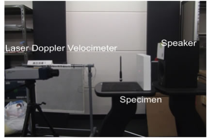
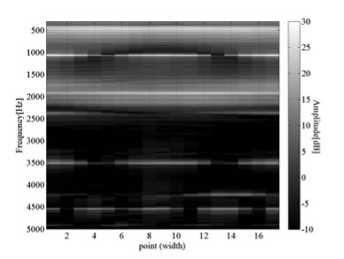

Most acoustic diagnosis methods may break or damage specimens because they require a process to hit specimens in order to vibrate them. To avoid imparing a specimen, it is generally prefered to diagnose specimens without touching it. Based on prevalent approaches, this research aims at improving an accuracy of a non-contact and non-destructive acoustic diagnosis method to figure out the three-dimensional structure of a medium by recording sound which propagates from it.
The purpose of this experiment is the extraction of three-dimensional structural information by a non-contact and non-destructive means. As specimens for this experiment, we prepared two different plasterboards: 23cm long, 32cm wide, 4.5cm thick board and the same size board with a hollow square in the center (8cm long, 12cm wide, 1cm thick, 1cm deep). To be concrete, as shown in the Fig.1 below, we put up specimens and emitted sound (Whitenoise) from a short distance (5cm) with a speaker and recorded their vibrations with a Laser Doppler Velocimeter. We recorded 17 points horizontally and 13 points vertically in lines, at the same intervals, to pass over the center of the surface of the two specimens, respectively. We enumerated each signal’s frequency response, which is averaged by time length, and compared its difference by measuring points.
Fig.2-1 and 2-2 below enumerate frequency responses, which are averaged by time, arranging them by 17 horizontal measuring points of the specimen without a hollow and the specimen with a hollow, respectively. And Fig.2-3 and 2-4 offer averaged frequency responses, which are arranged by 13 vertical measuring points of the specimen without a hollow and the specimen with a hollow, respectively.
In the Fig2-2 and 2-4, affected by the hollow, the peak of energy (almost 450Hz), which can be estimated as the first-order mode of the vibration systems, is made altered by the existence of the hollow. On the contrary, Fig2-1 and 2-3 do not indicate such changes in mode frequencies.
In this analysis, it is possible to judge whether the measuring point is on a hollow or not by observing whether the first-order mode frequency of the whole vibration system is stronger than the mode which can be estimate. Horizontal measuring points 6-12 and vertical measuring points 5-10 meet this requirement, thus the length and the breadth of the hollow are estimated to be 8.5cm and 12.5cm, respectively. It can also be estimated that a whole vibration system and another vibration system that is caused by a hollow were working independently. In terms of the panel vibration theory, characteristic frequencies of a vibration system, which is caused by a hollow, can be calculated. Therefore, from this formula and results of frequency responses, the thickness of the part, which is located on top of the hollow part of the specimen, can be calculated to be 0.992cm. Thus, these values (W: 8.5cm, B: 12.5cm, D: 0.992cm) almost conformed to the actual position and dimension of the specimen’s hollow.
Experiment Design, Theoretical Testification
- Bachelor's Thesis
- Included as a chapter in Technical Report for Collaborative Research w/ YAMAHA, Hamamatsu, Japan, 2011
More details available on this PDF file.